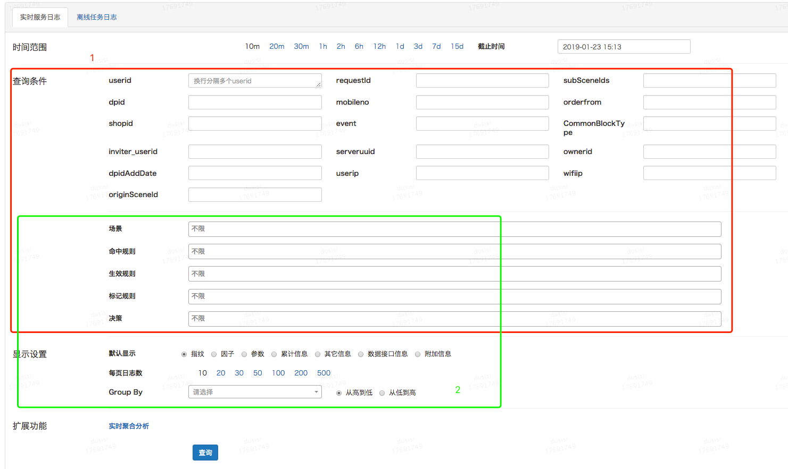
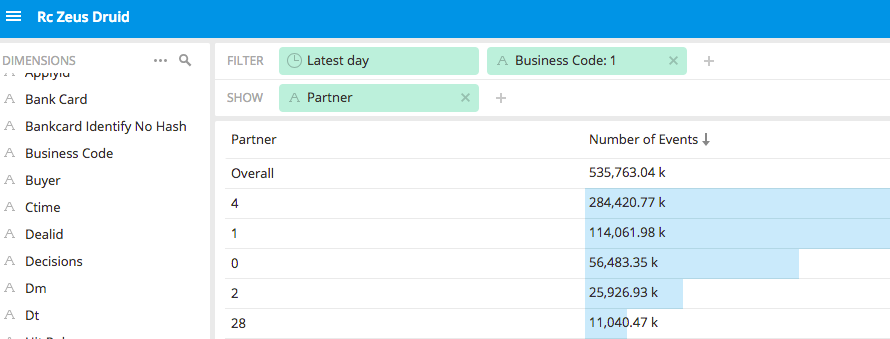

说明：Zeus日志接入和使用说明
一、简介
Zeus日志记录了各业务方使用规则引擎做决策的详细数据，包括：场景内的数据、配置的规则、决策、优先级、因子、参数、决策理由、衍生参数等等相关信息；
业务方可使用日志做数据分析、异常排查和问题定位等
二、服务方式
1、web页面：单条、批量、聚合查询
-
实时规则查询和异步规则查询分离
可通过日志查询-实时/离线查询实时规则和异步规则的执行明细数据
-
自定义查询字段
在日志配置中自定义配置查询条件
-
明细数据单条查询
可通过指定订单、账户、个人信息等条件查询近15天的明细数据，例如：userId、mobile、uuid等，见图片“1”
-
明细数据批量查询
可通过指定场景、规则、是否命中、决策、action等条件查询近15天分箱数据（group by）,例如：指定场景按命中规则、生效规则group by，见图片“2”

-
聚合数据查询：
可进行托拉拽规则、场景、规则、设备号、平台等条件查询近30天的数据量级和趋势，《Pivot》字段信息（目前仅提供风控内部使用，外部业务方需求需评估，数据承载能力有限）
入口：实时日志查询页面中--->扩展功能--->实时聚合分析

2、hive表：全量数据查询
- 自定义保存时间：默认hive表保存时间为6个月，若有特殊要求：业务可在上线前同步Zeus侧；
- 独立存储：为保证数据安全，每个接入业务方独立使用一张hive表，基于该表的业务定制化需求请通过ETL实现
- 敏感数据加密：Zeus将对敏感数据进行统一加密，为便于业务使用，会提供解密函数
表单详情如下：
通用业务方
|
字段英文名称 |
类型 |
字段中文名称 |
|---|---|---|
|
requestId |
string |
请求id |
|
businessCode |
smallint |
业务id |
|
sceneId |
int |
场景id |
|
hitRules |
string |
命中的规则id，用逗号隔开 |
|
decisionIds |
string |
决策id列表，用逗号隔开 |
|
markedRuleIds |
string |
标记规则，用逗号隔开 |
|
takenEffectRuleIds |
string |
生效规则 |
|
paramContext |
string |
请求参数json |
|
factorContext |
string |
规则因子json |
|
extraContext |
string |
其它信息json |
风控业务方
|
字段/业务方 |
|||
|
固定字段（12） |
requesteId、businessCode、sceneId 、subSceneIds、hitRules、decisionIds、markedRuleIds、takenEffectRuleIds、fingerprint、paramContext、factorContext、extraContext |
||
|
额外增加字段（15） |
userid、uuid、mobile、mobilecity、mobileprovince、ip、ipsub、ipcity、ipprovince、action、imsi、platform、ch、partner |
三、使用说明
1、web页面：新接入业务方在开通账号后、业务上线前，在Zeus-->数据统计-->日志配置中配置需要的字段，配置后即可使用“实时日志查询服务”。 说明：日志配置使用文档
说明：日志配置使用文档2、hive表：在业务上线前通知Zeus侧，由RD配置hive表单信息和保存时长，配置后反馈业务表名。
四、常见Q&A
1、